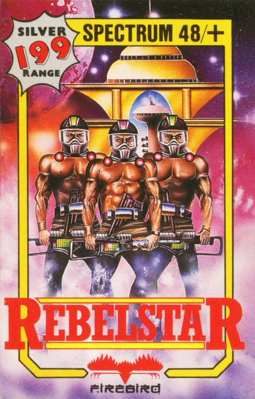
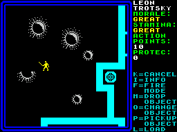

Rebelstar


{kind=link}

| Publisher: | Firebird |
| Price: | £1.99 |
| Year: | 1986 |
| Source: | CRASH, Issue 31 |

After recently looking at the old Red Shift game, Rebelstar Raiders and getting a lot of response, I was pleased to receive this release from Firebird. Called Rebelstar, it is actually written by the author of that early classic but has been much improved. For the price, this has to be the best strategy game I’ve reviewed in ten months of writing FRONTLINE.
One and Two player versions of the game are provided, each loaded as a separate game from a different side of the cassette. There is only one scenario, but this is larger than any of those in its predecessor. It involves a group of raiders trying to break into an enemy complex and disable the main computer. Player(s) controls individual characters or robots which are each allocated a certain number of action points. The members of a player’s team are ordered individually with different actions costing varying numbers of points. Each team member may carry out as many actions as required in a single move, as long as the point allowance for that character is not exceeded for that move.

the lower part of the screen move to
attack the raiders. The hollow square
on the left of the viewscreen is the
cursor — it’s the start of a turn, and
no selections have been made
Each character carries a weapon of some description and a quota of ammunition and may also carry several other items found on the route to the central computer. Only one item may be used at any time and it costs Action Points to change from one item to another.
The screen scrolls in four directions following the trail of the cursor used to order team members. To the right of the main action area, an information display lists the options available and any information about the figure currently highlighted by the cursor.
Play consists of turns during which a player moves and orders all forces under his or her control. Movement for characters is eight directional and orders consist of M (drop object), P (pick up object), O (change object in use), L (load object) and F (enter fire mode). Movement is achieved by selecting a unit and moving it under the cursor. When fire mode is entered, some map detail disappears, combatants become coloured spheres and the cursor changes into a sight. This sight is positioned in the desired target area and when confirmed, an energy beam is displayed along with a message detailing the accuracy of the pulse. There are three different kinds of shot: an aimed shot costs the most points but is most likely to succeed; a snap shot is less accurate but costs fewer points to perform; finally, a player may select opportunity fire to cover a particular area. Opportunity Fire only executes a shot when an enemy crosses the line of fire during his turn, in which case a snapshot is fired at him.
Shots may damage, wound or kill, scoring a random number of points determined by the power of the weapon. Generally, the more powerful the weapon a character possesses, the less ammunition is available. If a character is wounded in combat, a message to this effect appears next time that character is selected. Wounding reduces the constitution of a character — second wound kills. Killed characters are removed from play, but droids that have been knocked out leave wreckage which causes a blockage.
As the complex is entered and explored, various objects may become available to the players. Keys can be used to lock or unlock security doors (the key to the armoury is particularly useful). Medi-probes can be used to heal wounded characters, and Droid-probes repair droids. Using an object is achieved by bumping into the required target.
In the one player game, you may only take the part of the raiders but this apparent limitation is offset by the fact that the computer opponent is a highly competent adversary. It deploys the delending droids cleverly and uses them ruthlessly in its attempt to thwart your mission. However, as there are eight difficulty settings, you can temper this efficiency somewhat.
The game is superbly error trapped and many of the warning messages relate to specific actions to avoid ambiguity. The map is clean and well drawn but packed with detail and every item is properly labelled. Character graphics are quite good with different weapons altering the look of the troopers (all of whom are named). Even the sound effects are reasonable. Weapon skills, stamina and morale are taken into acount on an individual level and atmosphere and variety included in each event. Each character also has an assigned percentage chance of hitting a target listed.
I would have expected a game of such quality to appear at a much higher price, and take my hat off to Firebird for introducing this much improved version of an old favourite back onto the market at a reasonable price. I can find no fault with it.
Presentation 88%
The presentation on screen is spotless. If Firebird had taken more care with the instruction inlay, it could have been better
Rules 90%
Simple to pick up, but deviously devised
Playability 92%
You can almost play as soon as you load. The game runs at a fast pace from start to finish
Graphics 90%
Colourful, clear, detailed... what more can you ask?
Authenticity 91%
The Action Point system works excellently. It is however, very similar to that used by GDW in their game Snapshot. Come to think of it, there are a lot of similarities...
Opponent 91%
You will hate it once on the higher skill levels
Value for money 95%
Unbeatable
Overall 93%
No longer need you lament for Red Shift. This classic game is up for grabs now. I can only suggest you scamper off and get a copy